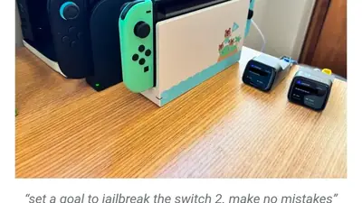

Alejandra Caraballo
@esqueer.net
· 10/22 22:14· 命中「AI agent」
This is going to end in disaster. www.axios.com/2026/10/22/a...
 4
200+ 次搜尋
4
200+ 次搜尋
 時事2026.10.21
時事2026.10.21
 生活2026.10.21
生活2026.10.21
Social Lab（OpView 社群口碑資料庫）每週彙整各平台熱門事件。榜上的數據以圖表呈現， 這裡列出每週彙整的標題與觀測期間，點進去看完整排行。
 PTT
PTT
 Facebook
Facebook
 Dcard
Dcard
 Instagram
Instagram
 YouTube
YouTube
 新聞
新聞
 Facebook 意見領袖
Facebook 意見領袖
 Instagram 意見領袖
Instagram 意見領袖
 YouTube 意見領袖
YouTube 意見領袖
Social Lab 依社群聲量統計的各平台人氣意見領袖前三名。
Bluesky 的全站熱門話題，以英語圈的娛樂、體育、政治為主，僅供參考。
以 30 小時內、依讚數與轉發數排序，已過濾掉 AI 繪圖標籤與明顯洗版內容。
This is going to end in disaster. www.axios.com/2026/10/22/a...
× LLMのおかげで脆弱性がわかった 〇 LLM使ってサイバー攻撃をするやつのためにそこまで対処しなきゃいけなっくなった、なきゃそんなもん誰も気付かずに終わってた
why do people call LLM training on public website data “AI Copyright Infringement” when “six finger discount” is right there
The threat of rogue AI agents taking unauthorized actions within our financial institutions, utilities, health systems and more has long since stopped being a hypothetical. If Congress doesn't swiftly act, these already significant risks will only get worse.
*waiting for the AI partisans to tell me LLM maps are better than actual ones
Most/all of this seems to be users giving Muse/Dot/whatever AI agent they're running access to their bank accounts, and then not knowing what those agents are doing / banks not being able to detect authorized vs unauthorized stuff. what could go wrong? www.axios.com/2026/10/22/a...
Do not fucking take the bait of that Switch 2 """jailbreak""" that just dropped it's literally all automated code by OpenAI

Major US banks are detecting unauthorized third-party AI agents inside customer accounts, including some attempting to take actions that appear to be independent of user instructions. Several banks are now preparing for worst-case and even “day after” scenarios.
it's more using claude kind of flies in the face of their mission statement anthropic and openai are actively trying to paywall knowledge and information as a concept the internet archive using it is a wildly bad look
it's remarkable how these ads just can't make the people using their product not look like assholes. like this is an extreme case but every Gemini ad is like "are you a trendchasing idiot who does things just because the computer told you to? well good news:"
Unvetted AI Agents Are Accessing US Bank Accounts - Axios www.axios.com/2026/10/22/a...
Teh ad
The AI boom is too expensive for companies. We previously got leaked audio saying workers burning through AI budgets by using it to convert PDFs to presentations. Now Accenture is limiting some employees' Claude spend to just $29 a month Watch more, subscribe here: www.youtube.com/watch?v=I-ag...